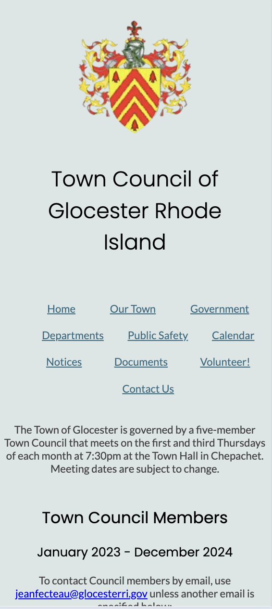
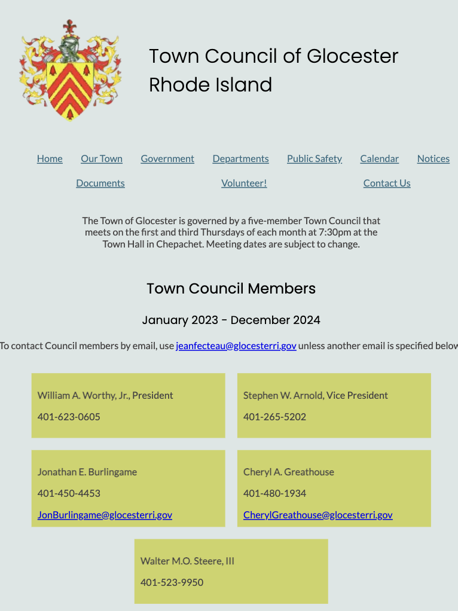
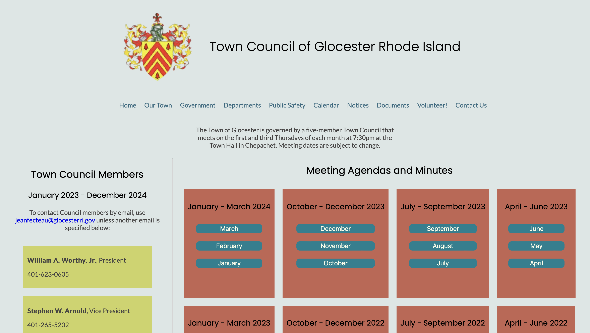

Responsive Redesign
Introduction and Context
In this project, I had the opportunity to redesign a websiteto include better design principles, including responding to different screen sizes. This project showcases my front end web development skills as well as my knowledge of and ability to apply core design principles.
Problem: Unresponsive Site
Picking a Webpage
For this redesign, I chose the Glocester RI Town Council Website (linked here). Feel free to use the frame below to take a look at the interface (and note that it does not respond to the in site frame).
Issues with the Site
There were some primary issues with this site that I sought to fix in my redesign:
- In the table for the agendas and minutes the agenda and minutes documents for a partpicular meeting are not necessarily horizontally aligned, which can create confusion and unnecessary extra scanning
- While there is clear delineation for seperate years, there is none for months, making it somewhat challenging to locate a specific month's agenda/minutes
- There is no responsive redesign for a mobile app, meaning users are relegated to the same interface whose proportions are not ideal on a small screen size. This impedes all user types, since the interface is simply not designed to handle a mobile sized screen
- The town administrative information is scattered between the top and bottom, and it is densely packed without a lot of meta-info that explains the relevance
All of these problems can lead to issues with learnability, memorability, and efficiency:
- Learnability: the interface is relatively simple, although the problems I brought up could make using the interface to locate certain agendas/minutes more challenging than necessary
- Memorability: returning users may have trouble memorizing the specific place of a certain link to an agenda/minutes document and then may have to search the entire table again
- Efficiency: frequent users could have the same troubles as only semi-frequent returning users, where it is very hard to memorize the specific location of one of the document links; additionally, for every new meeting (a semi-monthly event), the table is shifted downward, further complicating the issue of being able to remember a specific location
Accessibility Considerations
I also looked at the accessibility of the site. I generated this WebAIM report (linked here):
The report emphasizes issues relating to color contrast, especially as it relates to the links within the table to the agendas/minutes. Additionally, the color of the email links, being the same, also does not have sufficient contrast. Just looking at the page, the color does not seem ideal since it is bright red and hard to read, making it not ideal for text.
The report also references some other more behind the scenes issues with the page. No tiered headings (h1, h2, etc.) are used in the site, which is problematic since those using a screen reader need those headings to help provide structure to the page so they can understand it. Additionally, the report noted that the logo image lacked alt text, another accesssibility issue for individuals who make use of a screen reader.
Solution Phase 1: Visual Redesign
Speed Sketching
I did some speed sketching to brainstorm ideas for my redesign, and attemped to create a unique idea for each sketch. Here are my nine sketches, completed one per minute:

Final Sketch
Shown here is my final sketch for my redesign. This final sketch includes various design elements from my speed sketches, including the cards from sketches 3, 5, and 7; the information button from sketch 9; and the link navigation mechanism from sketch 4.

Low Fidelity Mockups
I then created low-fidelity mockups in Figma, each for a different screen size. I added annotations to them that indicate how they solve the problems I discussed earlier. Note that for reference, I include a side-by-side blank frame of the corrosponding device's size.
Mobile Lo-Fi
Tablet Lo-Fi
Desktop Lo-Fi
Visual Style Guide
I then created a visual style guide in order to ensure that I maintained consistency across all of my scren sizes. I used this as a basis for the design of my high-fidelity mockups and ultimately my final webpage.
High Fidelity Mockups
Using my visual style guide, I created three high-fidelity mockups, each for a different screen size. I then was able to use these mockups as a guide when deciding how to code my final website.
Mobile Hi-Fi
Tablet Hi-Fi
Desktop Hi-Fi
Solution Part 2: Coded Responsive Redesign
Finally, I coded my website using HTML and CSS. I used a flexbox display in order to prioritize responsiveness. I also included media queries based on the screen size that changed the flexbox CSS. Specifically, on a mobile device, all elements are vertical, while as the screen size gets larger and larger more elements are instead located horozintally from one another. You can take a look at my redesigned site below (notice that it responds to fit the in site frame, in contrast to the initial site above) or view the site linked here
Here are some brief screenshots, but note that scrolling continues below, so be sure to check out the link/frame to view the entire page. The first image is on a mobile sized screen, the next on a tablet sized screen, and the last on a desktop sized screen.
Mobile
Tablet
Desktop
Learnings and Reflections
Over the course of completing this project, I have had the chance to both improve my skills as a designer as well as develop improved thinking patterns relating to design. Regarding the former, I got great experience using Figma to create a visual style guide and mockups; I also got the chance to use vanilla HTML and CSS (including media queries and flexbox) to create a full-fledged website, modulo the interactive components. Considering my improved designer mindset, I had the chance to think about core design principles such as layout, color, visual hierachy, etc. and apply them to a real world scenario. Overall, I am pleased with what I have accomplished and I look forward to developing my skills in future endevours.